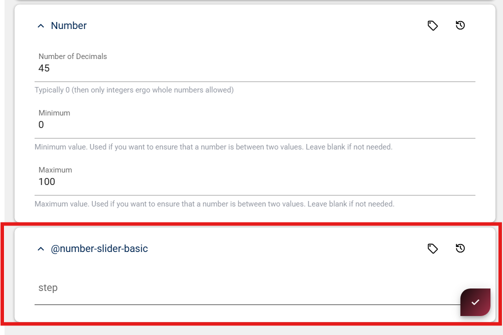
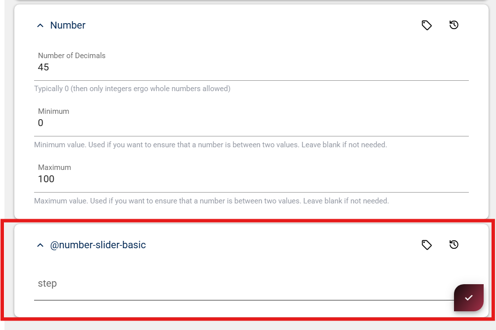

Input field extension
Custom input fields are App Extensions which live inside your App and extend the edit UI. They are plain JavaScript WebComponents which the 2sxc edit dialog can load and talk to.
This page shows how to create a custom input field in JavaScript using a basic number slider as example.
What are input field extensions?
Input Field Extensions let you add your own custom input controls They are small Components that run inside your App and replace or enhance normal fields like text-boxes or dropdowns.
Use them when you want a field, for example sliders, color pickers, tag selectors, or anything the built-in fields cannot do.
Folder structure for app extensions
Custom input fields are App Extensions and must be placed in a specific folder:
In your App, create a folder called
extensions(if it does not exist yet)Inside
extensions, create a folder for your field extension. The folder name must follow this pattern:field-[data-type]-[name]Examples
extensions/field-number-dialextensions/field-number-slider-basicextensions/field-boolean-iconsextensions/field-string-app-color-picker
Rules
- It must start with
field- - The second part is the data type (
string,number...). - The last part is a free name that describes your field.
- no spaces, only dashes
-as separators.
Configure your app extension
Before creating a custom input field, you must know where App Extensions live and how to configure them inside your App.
To change the settings of your input field extension, click the pen icon next to the extension entry.

After opening the editor, you'll see various fields that describe and configure your extension.
The most important setting is the Input Fields Configuration.
This is where you specify which files should be loaded to activate your custom input field extension.
Now that the App Extension is set up, we can start writing the actual code for the input field.
Example base input field
(() => {
const tagName = "field-example-basic";
// Minimal HTML for the component
const html = `<input type="text" />`;
class BasicField extends HTMLElement {
connectedCallback() {
// Connecter given by 2sxc
const connector = this.connector;
// Getting Settings
const settings = connector.field?.settings || {};
// Implement the HTML code
this.innerHTML = html;
// Listen for user input
this.onInput = () => {
this.field?.setValue(this.input.value || null);
};
this.input.addEventListener("input", this.onInput);
}
disconnectedCallback() {
// Clean up when component is removed
this.input.removeEventListener("input", this.onInput);
}
}
customElements.define(tagName, BasicField);
})();
The connector used in this example is the one provided by 2sxc.
You can find further examples of input field extensions in these repositories:
Creating a content type as entity reference
Sometimes you need additional settings for a field which don't belong in the main Content Type itself.
For this, you create a separate Content Type and reference it from the main one.
How to create and connect a Content Type
To make your custom input field configurable (for example to define Min, Max, or Step for a number slider),
you must create a separate Content Type and reference it in your main Content Type.
Important
When creating the settings Content Type, the Name is extremely important.
The Content Type name must match your extension name exactly
It must be exactly the same name as your App Extension,
with an @ in front of it, not the Component tag name.
For example, if your App Extension is named:
number-slider-basic
Then your Content Type must be named:
@number-slider-basic
If your App Extension and Content Type were set up correctly,
you can now add a field to your new settings Content Type.
In this example, we add a simple Number field called Step.
Once this field exists, 2sxc will automatically show it inside the field configuration UI when you use your custom input field in any Content Type.
It should look something like this:
Screenshot requirement: Please ensure the screenshot shows the full context of the content type field. Screenshot requirement: Please ensure the screenshot shows the full context of the content type field.
 

If everything works correctly, you can now rename the Content Type and move it into a new scope.
Include in Extension Export
We highly recommend you move the content-type to it's proper scope, so it's invisible when people install your extension.
When moving your settings Content Type into a new scope,
the scope name must follow the Extensions.{Name of Extension} pattern.


History
Created in v21.02